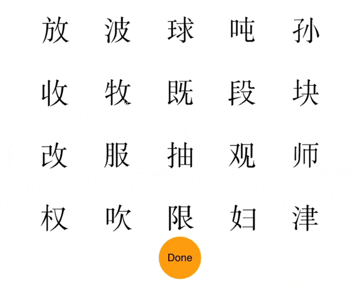

Exercise 10 - Dragging images to obtain a similarity space
Table of Contents
Exercise 10 - Dragging images to obtain a similarity space#
Suppose we want to find out how similar Chinese characters appear to people who do not read Chinese. There are several ways of doing this. One is to have people view pairs of images and provide pairwise similarity ratings. But the number of such judgments quickly grows with the number of stimuli. An alternative is to display many images at the same time and have people drag them into groups depending on how similar they look. So something like this:
Implementing this task in PsychoPy is very easy. Let’s take 10 minutes to do this starting with the code below.
import random
from psychopy import visual, core, event
from useful_functions import loadFiles, calculateRectangularCoordinates
win = visual.Window([900, 850], color="white", allowGUI=False, units='pix')
pics = loadFiles('stimuli', 'png', 'image', win)
numPics = len(pics.keys())
positions = calculateRectangularCoordinates(150, 150, numPics / 4, numPics / 5)
random.shuffle(positions)
mouse = event.Mouse(win=win)
done = visual.Circle(win,lineColor="orange",fillColor="orange",size=100,autoDraw=True)
doneText = visual.TextStim(win,text="Done",color="black",height=25)
doneText.setAutoDraw(True)
done.setPos((0,-320))
doneText.setPos((0,-320))
#keep going
#draw all the stims in their initial positions
#now allow user to move the stimuli and end by clicking on the orange button
---------------------------------------------------------------------------
ValueError Traceback (most recent call last)
<ipython-input-1-bc4d9312a8bc> in <module>()
6 pics = loadFiles('stimuli', 'png', 'image', win)
7 numPics = len(pics.keys())
----> 8 positions = calculateRectangularCoordinates(150, 150, numPics / 4, numPics / 5)
9 random.shuffle(positions)
10 mouse = event.Mouse(win=win)
/Users/glupyan/Dropbox/LupyanExps/Psychopy Files/useful_functions.pyc in calculateRectangularCoordinates(distanceX, distanceY, numCols, numRows, yOffset, xOffset)
161 coords[curObj]= (curCol*distanceX, curRow*distanceY)
162 curObj=curObj+1
--> 163 xCorrected = max([coord[0] for coord in coords])/2 -xOffset
164 yCorrected = max([coord[1] for coord in coords])/2 -yOffset
165
ValueError: max() arg is an empty sequence
To calculate a similarity space from the resulting positions, you can use multidimensional scaling as implemented in scikit/sklearn libraries which should already be installed on your machine. The first step would be to take the Euclidean distances between the final positions of the pictures, and save them to a matrix that looks like this (showing the rows/columns for the first 10 images)
CC001 0 30 106 753 127 415 154 584 292 473
CC002 30 0 497 104 341 382 127 507 16 340
CC003 106 497 0 212 393 747 233 340 683 398
CC004 753 104 212 0 640 778 611 152 101 628
CC005 127 341 393 640 0 78 309 273 389 322
CC006 415 382 747 778 78 0 451 581 356 469
CC007 154 127 233 611 309 451 0 629 206 644
CC008 584 507 340 152 273 581 629 0 631 233
CC009 292 16 683 101 389 356 206 631 0 162
CC010 473 340 398 628 322 469 644 233 162 0
import csv
import numpy as np
import matplotlib.pyplot as plt
from sklearn import manifold
data = list(csv.reader(open("distances.csv", "r"), delimiter='\t'))
dists = [map(float,distance[1:-1]) for distance in data
adist = np.array(dists)
amax = np.amax(adist)
adist /= amax
mds = manifold.MDS(n_components=2, dissimilarity="euclidean", random_state=6)
results = mds.fit(adist)
#this is your embedding
coords = results.embedding_
#here's some plotting code (though I would ordinarily do this in R)
plt.subplots_adjust(bottom = 0.1)
plt.scatter(coords[:, 0], coords[:, 1], marker = 'o')
for label, x, y in zip(characters, coords[:, 0], coords[:, 1]):
plt.annotate(
label,
xy = (x, y), xytext = (-20, 20),
textcoords = 'offset points', ha = 'right', va = 'bottom',
bbox = dict(boxstyle = 'round,pad=0.5', fc = 'yellow', alpha = 0.5),
arrowprops = dict(arrowstyle = '->', connectionstyle = 'arc3,rad=0'))
plt.show()